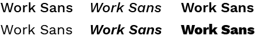

Fundamentación
Paleta tipográfica
La tipografía que se utiliza es “Work Sans” en sus distintas variables. Concuerda con la esencia del emprendimiento, luce elegante por su forma redondeada y por la forma de la terminación de sus trazos. Además, tiene muy buena legibilidad.

Paleta cromática
La paleta cromática fue elegida teniendo en cuenta los colores de la ropa de Edna y la paleta cromática de las escenas en las que aparece en la película.
Predomina el negro ya que representa la elegancia de sus diseños y es el color principal de su ropa. El magenta es el único detalle de color de su atuendo. El azul elegido se complementa bien con el resto de los colores y predomina en la paleta cromática de una de las escenas en las que aparece Edna. El blanco contrasta con el resto de los colores.
Marca
El isologotipo fue creado teniendo en cuenta el estilo único y elegancia de los diseños de Edna Moda. Para el texto se utilizó la tipografía Vogue, es palo seco en mayúscula con trazos que varían su grosor.
En la imagen se ve una síntesis del rostro de Edna, su pelo y lentes que la identifican, con el mismo tipo de trazo que la tipografía.